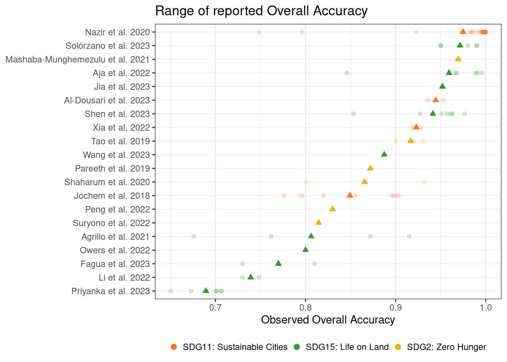
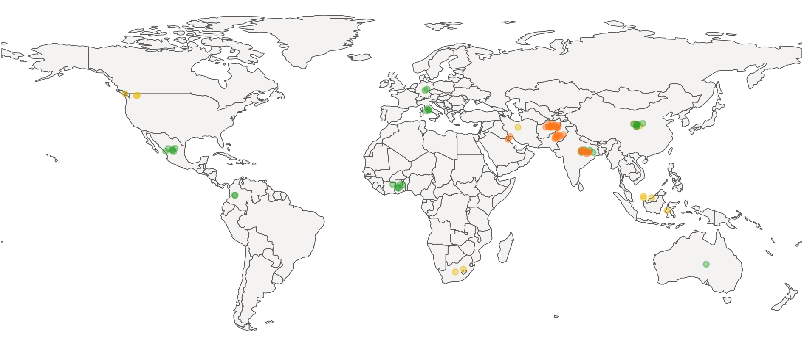
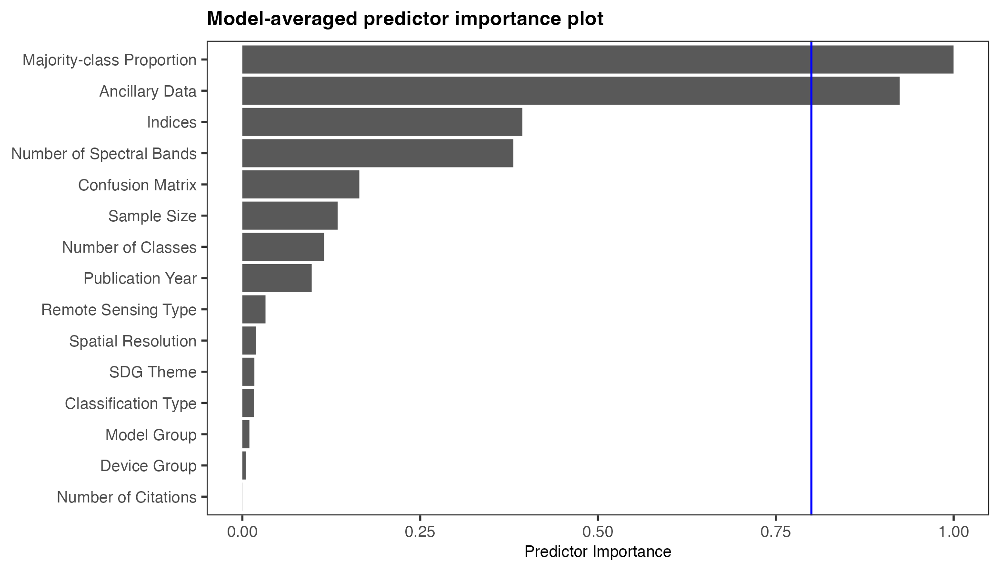
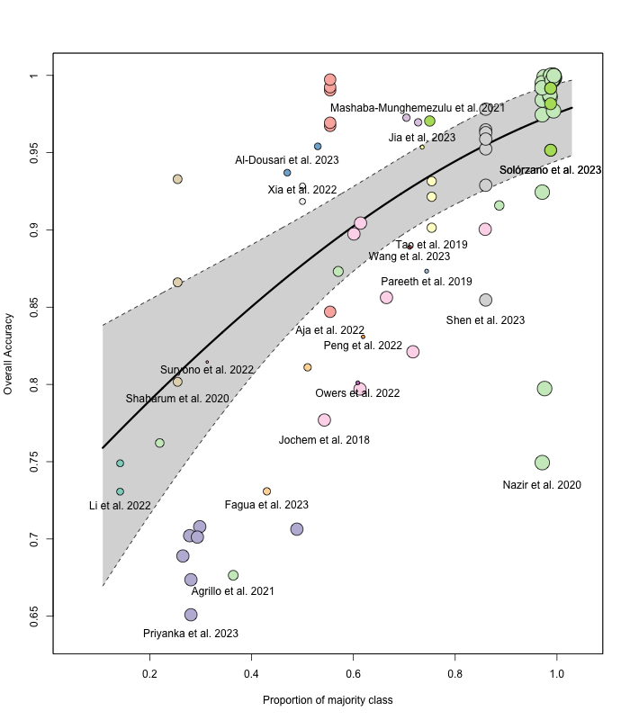
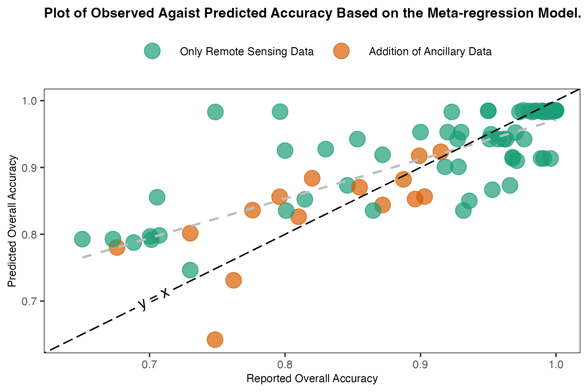

Evaluating Machine Learning Models in Remote Sensing for Sustainable Development Goals
Lay Summary
In a world facing climate change, biodiversity loss, and urbanization, global efforts like the Sustainable Development Goals (SDGs) are crucial. Monitoring progress toward these goals is challenging, and to achieve accurate data on a large scale, we must look to innovative technology. Machine learning models combined with remote sensing provide a powerful way to track environmental and societal changes from space.
This post walks through a meta-analysis (a study that combines results from multiple studies) I conducted for my masters thesis, which focused on understanding how well machine learning models perform when applied to remote sensing data for the SDGs and which study features affect the performance. The Active Analysis Dashboard also gives you the opportunity to add data (see contribute data page). The analysis automatically updated using this data.
Key Findings from the Study
Machine Learning Model Accuracy: On average, machine learning models in this field deliver an impressive 90% accuracy in classifying and predicting outcomes, such as land use, crop types, and forest cover, as seen across 20 studies and 86 results. It is important to note that this is a small sample size and only looked at results from published papers — this accuracy would almost certainly be lower if I also included unpublished work.

Selecting features
One key aspect of my analysis was multi-model inference, a technique used to compare multiple possible models to identify which study features most influence machine learning performance. In this study a total of 31,298 models were fit. By evaluating these combinations, the method determines which features consistently appear in the top-performing models, highlighting their importance.

Factors That Influence Performance: the majority class proportion i.e. the class imbalance in data (where one type of data is far more frequent then another) and the use of ancillary data (additional non-remote sensing data like information on ground temperature), were found to significantly affect model performance. Interestingly, the study found no major difference in performance between different types of machine learning models such as neural networks and tree-based models.

It is not surprising that the overall accuracy is high when the majority class proportion is large because the model can perform well simply by predicting the majority class most of the time. Which leads to inflated accuracy values that do not necessarily reflect good performance across all classes.
Observed vs. Predicted Accuracy: When using a model that include majority class proportion, ancillary data, and the use of remote sensing indices (the best fit model I have) the predicted accuracies tend to be overestimated.

Assumption of Normality
The normality assumption refers to the expectation that the distribution of the overall accuracy (effect size) in the studies follows a normal (bell-shaped) distribution. This assumption is important for the validity of certain statistical models.
In practice, the observed accuracy values tend to be skewed. To address this skewness and make the data more suitable for analysis, transformation techniques are applied. In my analysis, I used the Freeman-Tukey (FT) transformation. These transformations help stabilize the variance and make the distribution more symmetrical. The FT transformation, in particular, performed better in this case, although normality was still not perfectly achieved. In the following plot you can see the distributions of the effect size and their corresponding variance.